陪孩子，每天学一点
一张概念卡、一道小测验，到期了再复习：Sidonie 伴学是孩子身边耐心的 AI 小老师。孩子睡着后，它也陪大人把一篇论文从读懂、标注到复习、引用。所有记录都只留在你自己的浏览器里。
免费开源（MIT） 无需注册 用你自己的 API Key
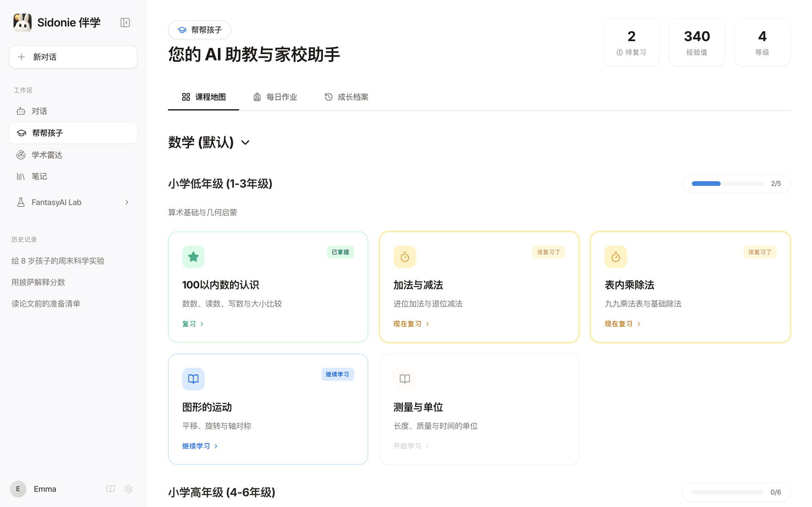
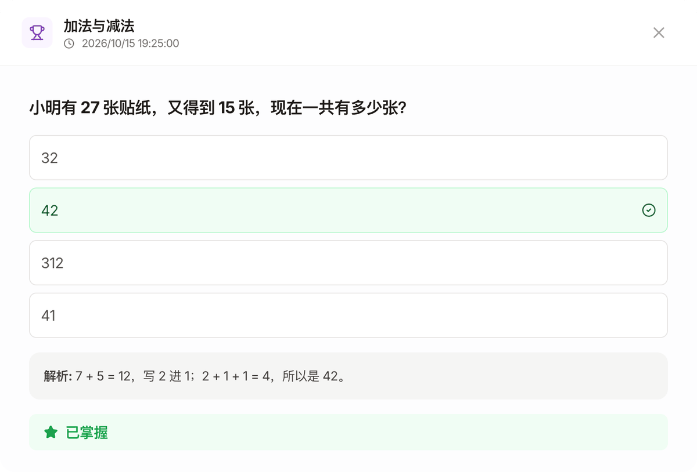
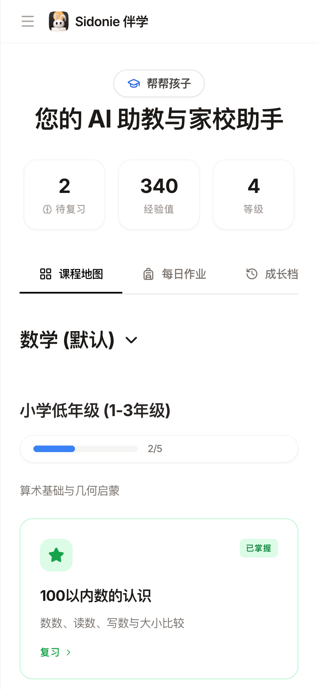
先做给自己的家人
Sidonie 是我太太的名字。每天看着她和孩子用 AI，我发现这些工具并不是为她们设计的：辅导功课时太泛，想跟上研究又要在好几个工具之间来回切换。
所以我做了 Sidonie 伴学，最先只给身边最亲近的两个人用 —— 让孩子有一个安静学习的地方，也让大人能继续思考。如果它对我们家有用，也许对你的家庭也有用。
Melon（李辉），FantasyAI Lab 创始人
学习，是一个小小的闭环
不是又一个聊天框。每个知识点都按「先理解、再练习、到期再复习」的节奏走，家长陪着一起看就好。
-
1概念卡
用孩子听得懂的话讲清楚
一个知识点一张卡：有生活里的例子、有小窍门，不懂的地方还可以继续追问。
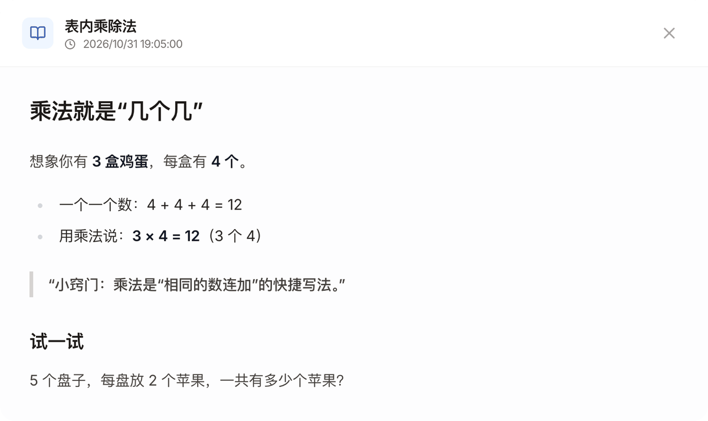
-
2小测验
马上练一练，当场看解析
选择题即时判断对错并给出解析。答对、答错都会被记下，决定下一次什么时候复习。
-
3间隔复习
快忘的时候，它会回来
每次答题后自动安排下次复习：答对了，间隔一次比一次长；答错了，这个知识点会立刻回到「该复习了」。
- 今天学会
- 1 天后复习
- 3 天后复习
- 8 天后复习
- 22 天后复习
连续答对时的复习间隔（默认设置） 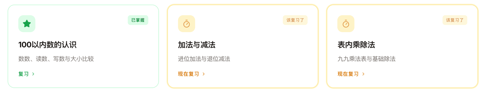
- 内置数学路径从小学一年级一直到大学
- 任意学科都能建让 AI 按学科和年级生成课程大纲
- 三种学习卡片概念讲解、小测验、可动手的可视化演示
更多功能
老师布置的作业，也接得住
把老师发的作业要求记下来，文字或照片都可以。晚上陪孩子写作业时，心里有数。
- 按天、按学科记录，回头翻看很方便。
- AI 帮家长解读重点：这道题到底在考什么。
- 生成几道练习题：同类型再练一练。
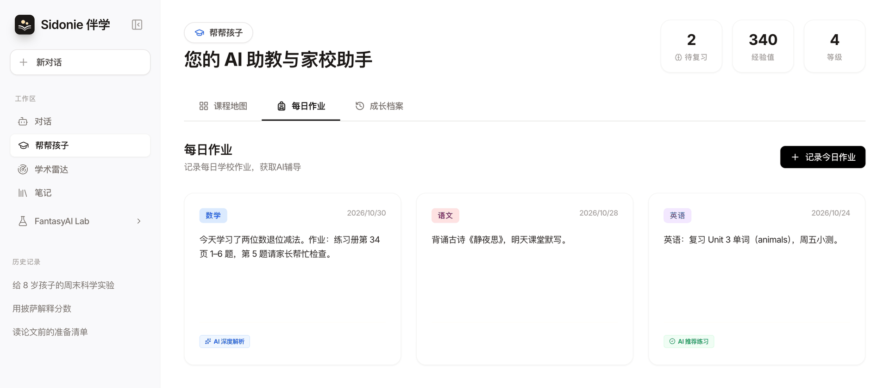
每一点坚持，都被看见
学完一个知识点得经验值、升等级、解锁徽章；学习日历记下每一次学习。不靠催，靠一点点成就感。
- 经验值、等级与成就徽章，孩子自己看得懂。
- 学习日历，家长随时回看这周学了什么。
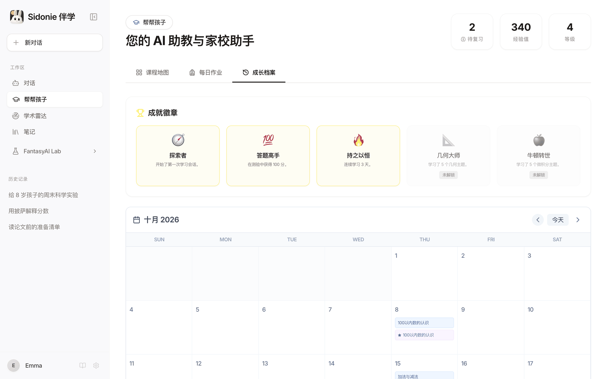
手机上也能用
Sidonie 伴学是一个网页应用，电脑和手机浏览器打开即可，不用安装 App，也不用注册账号。
- 中文 / 英文界面，一键切换。
- 开源可自部署：可以在自己电脑上运行，或部署成一个静态网站。
- 对话与笔记：多会话对话，支持上传 PDF、Word、图片；好内容一键存进笔记。
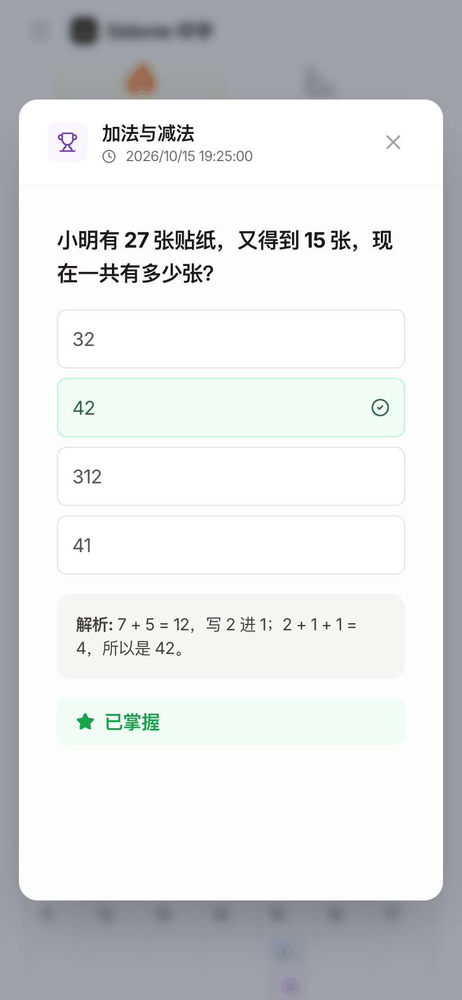
孩子睡着后，好好读完一篇论文
学术雷达不只是刷新论文。从发现到引用，一篇论文该走的路，它陪你一步步走完；全文、批注和卡片都留在你的浏览器里。
- 1发现按主题浏览 arXiv 新论文，或搜索关键词
- 2收藏阅读清单：待读 / 在读 / 已读，加标签
- 3阅读浏览器内提取全文，逐段对照翻译
- 4理解结构化精读；向论文提问，回答注明出处
- 5标注划词高亮、写批注，让 AI 解释这段话
- 6复习术语卡片，按间隔复习巩固
- 7引用一键复制 BibTeX、APA、GB/T 7714
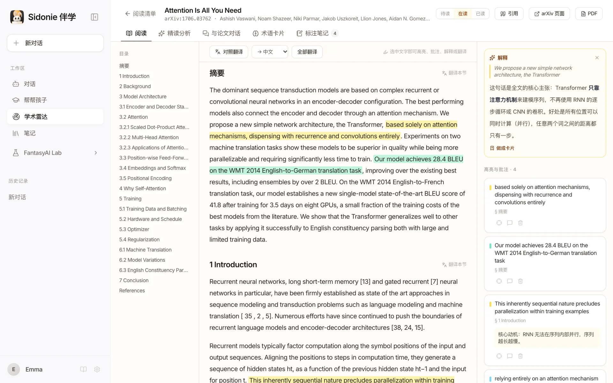
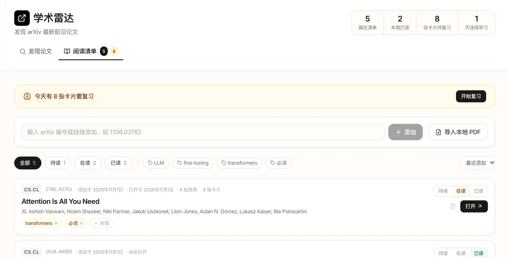
阅读清单
按编号或链接添加 arXiv 论文，也能导入本地 PDF。本周读了几篇、几张卡片要复习，一目了然。
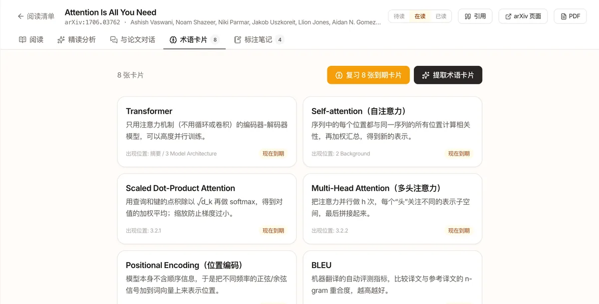
术语卡片
一键提取关键术语和通俗解释，和「帮帮孩子」用同一套间隔复习，读过的论文不再读完就忘。
还有这些
- 结构化精读：一句话总结、方法、贡献、局限、前置知识。
- 与论文对话：本地检索相关段落，回答注明出处章节。
- 导出到笔记：高亮、批注和引用一起带走。
- 不配 Key 也能用：阅读、标注、复习和引用都不需要 Key。
说明：截图里的 AI 内容（译文、解释、术语卡片）是演示文本。全文提取是启发式的，公式和表格可能错乱，扫描版 PDF 无法提取文字。
学习记录，只留在你家的浏览器里
Sidonie 伴学是一个纯静态网页应用：没有 Sidonie 后端，不需要账号，也没有任何统计埋点。
本地优先
对话、笔记、孩子的学习进度、论文批注和设置，都只保存在当前浏览器里。
自带 Key
用你自己的模型 API Key。它只发给你选择的服务商，绝不会被打包进应用代码。
没有服务器
不注册、不登录。没有 Sidonie 后端，我们也接触不到你的任何数据。
没有埋点
应用里不接入任何统计或广告追踪，这个官网也一样。
| 对话、笔记、学习进度、设置 | 仅保存在当前浏览器的 localStorage |
|---|---|
| 论文 PDF、全文、译文、批注与卡片 | 仅保存在当前浏览器（IndexedDB 和 localStorage） |
| API Key | 保存在浏览器本地，只发给你选择的模型服务商 |
| AI 请求 | 从浏览器直接发往 Google Gemini、DeepSeek、Moonshot（Kimi）或阿里云百炼（通义千问） |
| 学术雷达搜索与 PDF | 发往 arXiv；在线版的搜索需经公共 CORS 代理，它只能看到搜索关键词 |
坦白说：Key 以明文保存在浏览器里，能使用这台电脑这个浏览器的人也能读到。建议使用设了额度上限的 Key，在公共电脑上用完即删。目前没有云端同步，清空浏览器数据会删除所有记录。
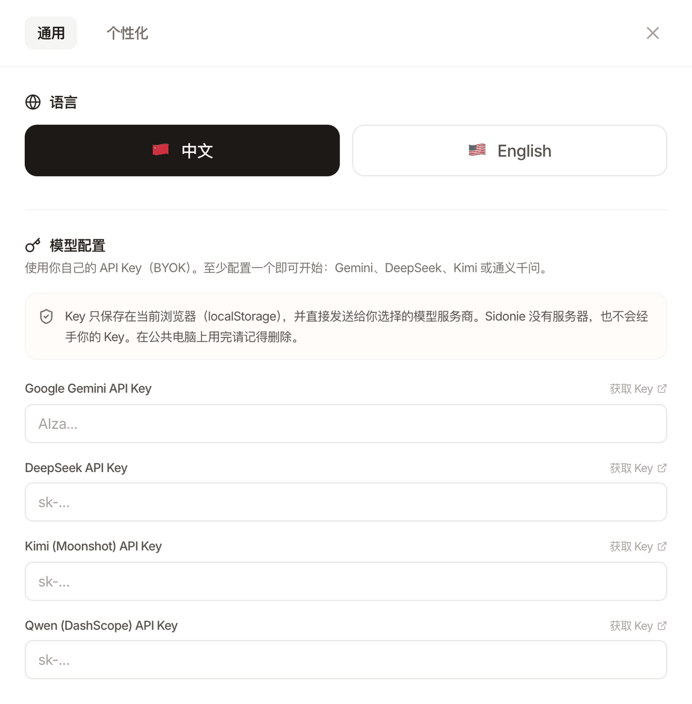
用你自己的模型 Key
至少配置一家即可开始，费用直接由你向服务商支付，很多服务商都有免费额度。
配置了 Gemini Key 时，帮帮孩子和学术雷达会优先使用 Gemini；否则自动改用你配置的其他服务商。
家长常问的几件事
收费吗？
Sidonie 伴学本身免费开源（MIT 协议）。模型调用费用由你自己的 Key 直接向服务商支付，很多服务商都有免费额度。
需要注册账号或安装 App 吗？
都不需要。打开在线体验，在「设置 → 模型配置」里填一个 API Key 就能开始。也可以在自己电脑上运行（npm run dev），或把它部署成一个静态网站。
适合什么年龄、什么学科？
内置的是从小学低年级到大学的数学学习路径。「创建课程」可以让模型为任意学科和年级生成课程大纲。
孩子可以自己用吗？
它的设计初衷是家长陪孩子一起用。AI 生成的讲解和题目可能有错，请和孩子一起核对。
我的 API Key 安全吗？
Key 只保存在你的浏览器里，只会发送给对应的服务商，Sidonie 伴学没有服务器，接触不到它。但它是以明文保存的，能使用这个浏览器的人也能读到，所以建议使用设了额度上限的 Key，在共享设备上用完即删。
换一台电脑或手机，学习记录还在吗？
不在。所有数据都只保存在当前浏览器里，目前没有云端同步。数据导出 / 导入已经在路线图上。
为什么在线体验里的学术雷达有时加载失败？
arXiv 的检索接口不允许浏览器直接请求，在线体验依赖公共 CORS 代理，它有时会变慢或不可用。在自己电脑上运行会更稳定。论文 PDF 可以直接从 arXiv 下载，代理不可用时也能按编号把论文加入清单、读全文。
论文全文提取准确吗？
全文是在浏览器里从 PDF 提取的，能处理双栏排版、标题和断词，但公式、表格和图中文字可能错乱；扫描版 PDF（纯图片）没有文字可提取，只能看摘要。读到关键处，建议对照原 PDF。
为什么叫「Sidonie 伴学」？
Sidonie 是作者太太的名字，这个项目最先就是为她和孩子做的；「伴学」是它想做的事：陪着孩子学，也陪着大人学。